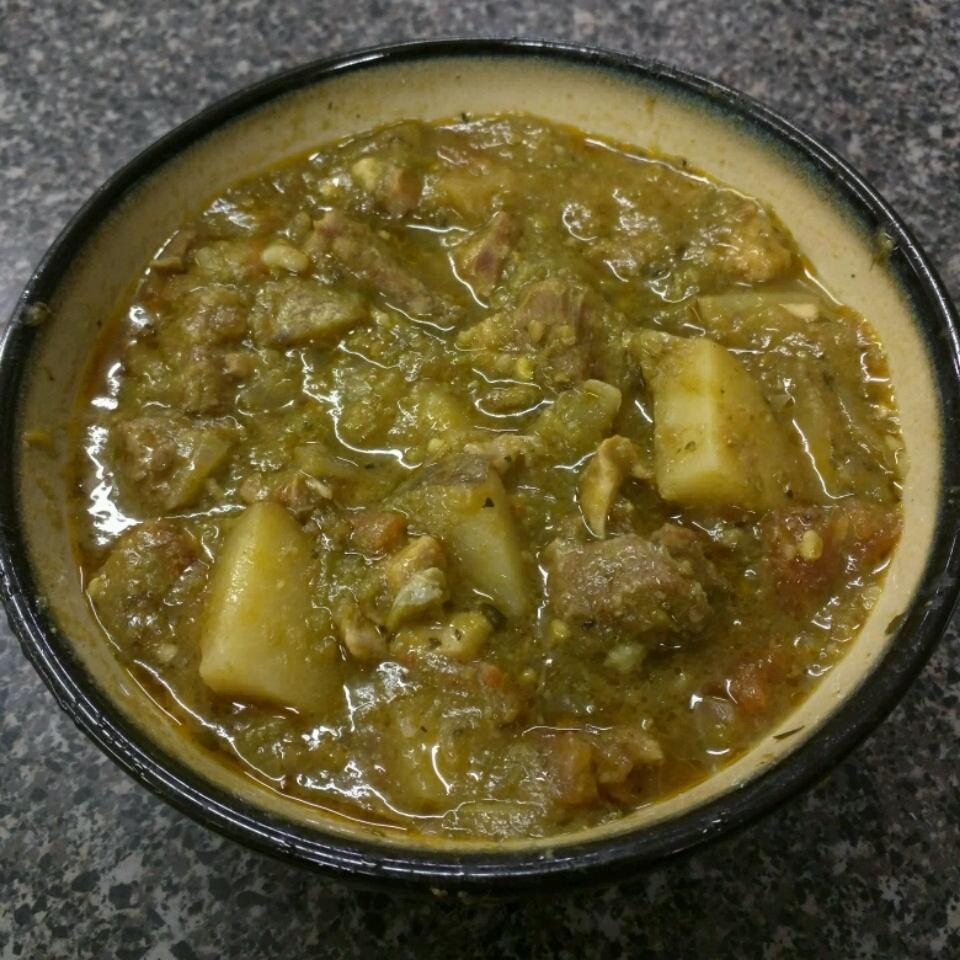

Green Chile Stew

The best green chile stew this side of heaven!
This is my slow cooker version of a green chile stew from New Mexico. It is great to serve with tortillas, tortilla chips, green onions, and sour cream.
- 1 pound beef tenderloin, cubed
- 1 pound boneless pork loin, cubed
- ¼ cup masa harina
- 1 tablespoon olive oil
- 1 red onion, chopped
- 3 cups chopped fresh tomatoes
- 2 cups diced green chile peppers
- 2 cups low-sodium beef broth
- 1 tablespoon ground cumin
- 1 large potato, cubed
- 3 cloves garlic, minced
- 2 teaspoons chopped fresh oregano
- 2 teaspoons chopped fresh cilantro
- 1 dash cayenne pepper (Optional)
- salt to taste
- ground white pepper to taste
- Place the beef tenderloin cubes, pork loin cubes, and masa harina in a plastic bag, and shake to coat the meat. Heat the olive oil in a large skillet over medium-high heat, and cook and stir the meat cubes until evenly browned, about 10 minutes.
- Place the meat, red onion, tomatoes, green chile peppers, beef broth, cumin, potato, garlic, oregano, cilantro, cayenne pepper, salt and white pepper in a slow cooker. Cook on Low until the meat is tender, about 8 hours.
Return Home